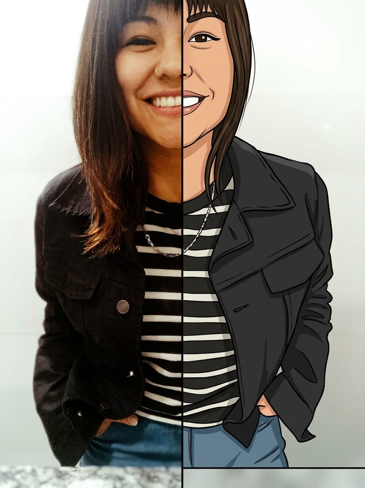

Un espacio para compartir quién soy, mis sueños y mis ideas.

¡Hola! Soy Fernanda. Este es mi pequeño rincón en Internet, un lugar donde quiero compartir mi historia, mis ideas, mis sueños y mis experiencias.
Me gusta aprender, descubrir cosas nuevas y expresar mi creatividad.
Aquí compartiré las cosas que me gustan, mis aficiones, mis inspiraciones y todo aquello que forma parte de mi vida.
Este espacio estará dedicado a mis ideas, trabajos, aprendizajes y proyectos personales.
Gracias por visitar mi pequeño mundo. ¡Me alegra tenerte aquí!